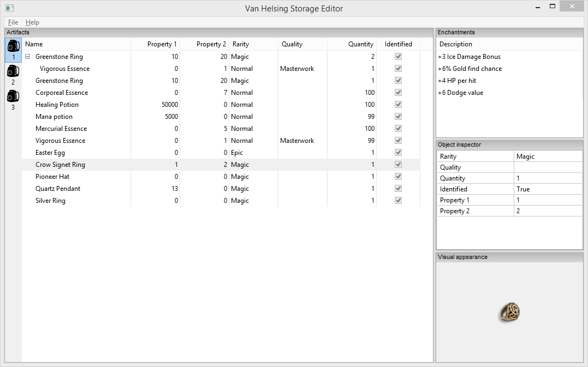

Van Helsing game research
This project was initiated for fun and learning. The main goal is to research the internals of the game The Incredible Adventures of Van Helsing. I plan to reverse engineer interesting parts of the game and its file formats. Eventually, it may become useful for myself and other developers, or even end-users.
Download (binaries)
See releases on GitHub.
Requirements
- Operating system: Windows XP or later.
- Visual C++ Redistributable Packages for Visual Studio 2013
Current programs
- Unpacker for N2PK packages (command line) (Files.N2PK). These files contain textures, models, etc.
- Storage viewer (command line) (storage.sav). Displays all of the items you have in your storage.
- Storage editor.
Screenshot

Game-save location (PC)
Documents\NeocoreGames\Van Helsing\SaveGame\<number>